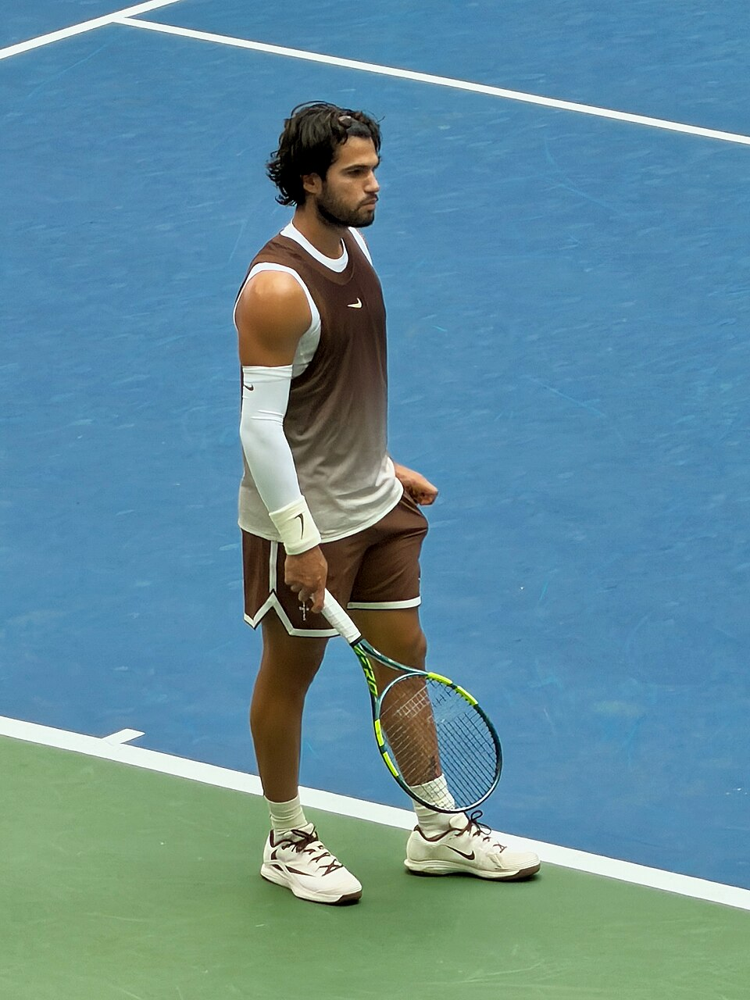

O ATP de Viena 2026, oficialmente chamado de Erste Bank Open, integra a reta final da temporada do tênis masculino e ocupa uma posição importante no calendário anual. Realizado na capital da Áustria, o torneio combina tradição, uma estrutura de alto nível e uma chave que costuma reunir jogadores estabelecidos entre os melhores do mundo.
A edição desta temporada acontece entre 26 de outubro e 1º de novembro, com o Wiener Stadthalle como palco principal. A competição distribui uma premiação total anunciada de 2.797.985 euros e oferece 500 pontos ao campeão de simples, um incentivo significativo na disputa pelas posições mais altas do ranking mundial.
A presença de Alcaraz, Zverev, Medvedev, Flavio Cobolli, Frances Tiafoe e Alex de Minaur reforça o nível técnico da edição. Além da conquista do título, Viena representa uma oportunidade de acumular pontos importantes na fase decisiva do calendário, quando também se aproxima a definição dos participantes do ATP Finals.
Cronograma do torneio
O Erste Bank Open é disputado em Viena, na Áustria, tradicionalmente durante o mês de outubro. Seu principal palco é o Wiener Stadthalle, arena que recebe as partidas mais importantes da competição.
O torneio utiliza quadras duras em ambiente coberto, condição que elimina interferências diretas de chuva e vento durante os jogos. Esse cenário favorece a regularidade das condições de jogo e dá importância especial ao saque, à devolução e à capacidade dos tenistas de controlar as trocas de bola.
A programação de 2026 está organizada da seguinte maneira:
- 24 e 25 de outubro: qualifying, fase classificatória.
- 26 a 29 de outubro: primeira e segunda rodadas da chave principal.
- 30 de outubro: quartas de final.
- 31 de outubro: semifinais de simples.
- 1º de novembro: finais de simples e duplas.
Além do Wiener Stadthalle, a organização utiliza a Marx Halle como espaço complementar de partidas e atividades relacionadas ao torneio.
O ATP de Viena conta com uma chave principal de 32 tenistas em simples e 16 parcerias em duplas.
Confrontos confirmados
O torneio começa sua chave principal com confrontos importantes já na primeira rodada.
Os jogos têm transmissão para o Brasil pela ESPN e pelo Disney+, além da cobertura internacional da Tennis TV.
Jogos do ATP de Viena 2026 — horários de Brasília
Segunda-feira, 26 de outubro:
- Jakub Mensik x Lukas Neumayer — não antes das 13h30.
- Luca Van Assche x Learner Tien — não antes das 16h.
- Arthur Fery x Jacob Fearnley — 13h30.
Terça-feira, 27 de outubro
- Tommy Paul x Andrey Rublev — 9h30.
- Carlos Alcaraz x Karen Khachanov — após Paul x Rublev.
- Alexander Zverev x Martín Landaluce — não antes das 13h30.
- Flavio Cobolli x Grigor Dimitrov — não antes das 16h.
Outros confrontos confirmados, com horário a definir
- Daniil Medvedev x Daniel Mérida.
- Frances Tiafoe x Lorenzo Musetti.
- Tallon Griekspoor x Brandon Nakashima.
- Jurij Rodionov x Nikoloz Basilashvili.
A programação pode sofrer alterações conforme a duração das partidas anteriores.
Os principais jogadores do ATP de Viena 2026
A edição deste ano reúne atletas de diferentes gerações, incluindo campeões anteriores do próprio torneio e jogadores em busca de conquistas importantes no circuito.
Alexander Zverev aparece como principal cabeça de chave. O alemão conhece o caminho do título em Viena, onde foi campeão em 2021 ao derrotar Frances Tiafoe. Sua experiência no torneio e o histórico de resultados em quadras duras cobertas são elementos importantes para compreender sua condição entre os protagonistas.
Carlos Alcaraz é outro destaque. O espanhol recebeu um convite para disputar a competição e retorna ao torneio depois de sua participação em 2021, quando alcançou as semifinais.
Daniil Medvedev também possui uma relação especial com Viena. O russo foi campeão em 2022, derrotando Denis Shapovalov na decisão. Seu estilo de jogo, marcado pela consistência nas trocas de fundo de quadra, torna sua presença relevante em uma competição dessa natureza.
A combinação de jogadores experientes e representantes da nova geração ajuda a explicar a relevância do torneio dentro do circuito.
Premiação e pontos
Como torneio ATP 500, Viena oferece uma pontuação importante para o ranking mundial,
Na edição de 2026, a distribuição anunciada para a chave de simples é a seguinte:
- Campeão: 523.305 euros e 500 pontos.
- Vice-campeão: 281.540 euros e 330 pontos.
- Semifinalistas: 150.040 euros e 200 pontos.
- Quartas de final: 76.655 euros e 100 pontos.
- Oitavas de final: 40.920 euros e 50 pontos.
- Primeira rodada: 21.820 euros e nenhum ponto.
Nas duplas, a parceria campeã recebe 171.870 euros e 500 pontos no ranking da modalidade. A dupla vice-campeã tem premiação de 91.660 euros e 300 pontos.
A pontuação é particularmente relevante porque os resultados obtidos nos torneios ATP 500 podem contribuir para a posição dos atletas tanto no ranking tradicional quanto na corrida anual que determina a classificação ao ATP Finals.
Brasileiros no ATP de Viena 2026
Embora a chave masculina de simples não apresente representantes brasileiros, a competição conta com participação nacional nas duplas.
Rafael Matos e Orlando Luz integram a chave como parceria brasileira. Os dois enfrentam Christian Harrison e Neal Skupski, segundos cabeças de chave, em sua estreia.
Outro brasileiro presente é Marcelo Melo, que forma dupla com Alexander Zverev. A parceria tem pela frente os italianos Simone Bolelli e Andrea Vavassori na primeira rodada.
A participação de Melo possui um significado especial pela história do brasileiro no torneio austríaco. O mineiro conquistou o título de duplas em Viena em 2015, 2016 e 2020, nas três ocasiões ao lado do polonês Lukasz Kubot.
A trajetória reforça a tradição brasileira no circuito de duplas e acrescenta uma ligação nacional importante a um torneio europeu historicamente associado a grandes nomes do tênis mundial.
A história do ATP de Viena e seus grandes campeões
O torneio começou em 1974 e construiu, ao longo de mais de cinco décadas, uma galeria de campeões com alguns dos maiores jogadores da história do tênis.
A primeira edição teve como campeão o norte-americano Vitas Gerulaitis, que derrotou Andrew Pattison na decisão. Desde então, a competição recebeu nomes de diferentes gerações, consolidando-se como uma das atrações tradicionais da temporada europeia em quadras cobertas.
Entre os campeões de simples estão:
- Andre Agassi — campeão em 1994.
- Boris Becker — campeão em 1996.
- Pete Sampras — campeão em 1998.
- Roger Federer — campeão em 2002 e 2003.
- Novak Djokovic — campeão em 2007.
- Andy Murray — campeão em 2014 e 2016.
- Dominic Thiem — campeão em 2019.
- Alexander Zverev — campeão em 2021.
- Daniil Medvedev — campeão em 2022.
- Jannik Sinner — campeão em 2023 e 2025.
Entre os grandes personagens dessa história, Federer ocupa um lugar especial. O suíço venceu duas edições consecutivas. As conquistas fazem parte da trajetória de Roger Federer, marcada por grandes atuações em diferentes superfícies.
Outro nome fundamental é Brian Gottfried. O norte-americano detém o recorde histórico de quatro títulos de simples no torneio, conquistados em 1977, 1980, 1982 e 1983.
A história também reserva espaço importante para o tênis austríaco. Dominic Thiem foi campeão em 2019, derrotando Diego Schwartzman na final. Antes dele, Jürgen Melzer havia conquistado as edições de 2009 e 2010.
A final marcante de 2025
A edição da temporada passada adicionou um capítulo importante à história recente do ATP de Viena.
Jannik Sinner conquistou seu segundo título no torneio ao derrotar Alexander Zverev por 3/6, 6/3 e 7/5.
O italiano precisou reagir depois de perder o primeiro set. A recuperação passou por uma melhora no rendimento ofensivo e pela capacidade de resistir aos momentos de pressão, especialmente na parcial decisiva.
No terceiro set, Sinner conseguiu a quebra de serviço que o colocou em vantagem por 6/5 e, em seguida, confirmou seu saque para fechar a partida.
O resultado repetiu a conquista do italiano em 2023, quando havia derrotado Daniil Medvedev por 7/6, 4/6 e 6/3.
A decisão de 2025 também reforçou uma característica do torneio austríaco: sua capacidade de proporcionar confrontos de alto nível entre jogadores acostumados a disputar os principais títulos do circuito.
A importância para o ranking mundial
O Erste Bank Open está inserido em um momento estratégico da temporada. Sua realização no fim de outubro aproxima o torneio de outras competições importantes do calendário europeu e da definição das vagas para o ATP Finals.
Essa localização no calendário transforma os 500 pontos oferecidos ao campeão em um incentivo adicional. Para jogadores que disputam posições próximas no ranking, campanhas profundas em Viena podem produzir mudanças relevantes na classificação.
Outro aspecto importante é o formato eliminatório de chave relativamente compacta. Com 32 tenistas na competição de simples, o campeão precisa vencer cinco partidas na chave principal para conquistar o título.
O sistema também permite que confrontos importantes aconteçam desde as primeiras rodadas, já que a presença de jogadores altamente classificados não impede encontros com adversários de grande experiência e qualidade técnica logo na estreia.
Além da pontuação, o torneio proporciona uma preparação competitiva em condições de quadra coberta, características da parte final da temporada masculina.
Mais do que uma etapa de preparação para os últimos compromissos da temporada, Viena oferece um título de peso dentro do circuito ATP. A combinação de história, dificuldade técnica e relevância para o ranking explica por que o Erste Bank Open permanece como uma das competições mais respeitadas do tênis masculino em quadras cobertas.